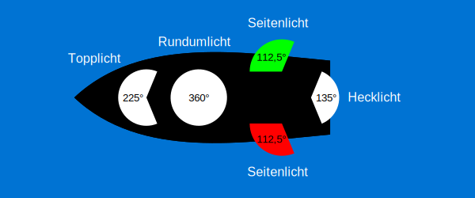
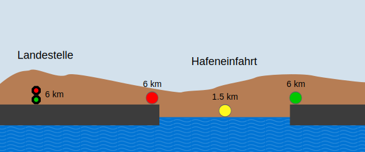

Lichter
Navigationslichter
Anhand der Lichter eines Schiffes lässt sich erkennen um welche Art von Schiff es sich handelt und welchen Kurs es hat. Die Lichter müssen zwischen Sonnenuntergang und Sonnenaufgang und bei schlechter Sicht geführt werden. Sie dienen NICHT dazu die Nacht zu erhellen um besser zu sehen, sondern ausschließlich um besser gesehen zu werden.
Es wird zwischen hellen und gewöhnlichen Lichtern unterschieden, wobei Gewerbliche Schiffe helle Lichter führen müssen. Sie unterscheiden sich hauptsächlich in ihrer Sichtweite:
| Hell | Gewöhnlich | |
|---|---|---|
| Weiß | 4 km | 2 km |
| Grün & Rot | 3 km | 1.5 km |
Im folgenden sehen sie die üblichen Lichter und die Sektoren in denen diese strahlen.

In folgender Tabelle sehen sie, welche Lichterführung zu welchem Fahrzeug gehört.
| Fahrzeug | Lichterführung |
|---|---|
| Ruder-, Padel-, Tretboote | Rundumlicht (weiß gewöhnlich) |
| Segelboote unter Segel | Rundumlicht (weiß gewöhnlich) |
| Segelboote unter Motor | Topplicht, Seitenlichter, Hecklicht (Seitenlichter und Hecklicht können auch in einer Dreifarbenlaterne zusammengefasst sein) |
| Motorboot & Berufsfischer mit weniger als 4.4kW, Berufsfischer am Netz | Rundumlicht (weiß gewöhnlich) |
| Motorboot mit mehr als 4,4kW | Topplicht, Seitenlichter (Können auch in einer Zweifarbenlaterne zusammengefasst sein) |
| Gewerbeschiff | Topplicht (Höher als Seitenlichter), Seitenlichter, Hecklicht |
| Schleppverband, Gekuppelter Verband | Schlepper: Topplicht, Seitenlichter, Hecklicht Geschlepptes Fahrzeug: Rundumlicht |
| Polizei, Feuerwehr, Rettungsdienste im Einsatz | Topplicht, Seitenlichter, Hecklicht, Funkellicht |
| Vorrangschiff | Topplicht, Seitenlichter, Hecklicht, Rundumlicht (Grün, mindestens 1 m über Topplicht) |
Beleuchtung von Häfen und Landestellen
